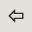
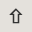
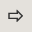

| Navigation: Main Interface | |
Announcement Page |
   |
Announcement Page
When a user is logged in he can display his announcement page. He can either do that by opening the 'View' menu and selecting 'Announcements' or, in case that there are announcements for him or her, he can click on the announcement icon that will also show in the menu bar.
On the page all announcements meant for the user, wether sent to him as a single user or as a member of a group or All will be displayed. Each announcement entry will also show a 'Confirm' button. By clicking this button the user can confirm that he read the message and remove it from his list. The button will not delete the announcement itself. It will only take it from his list. Other user that this announcement was sent to as well (e.g. a group announcement) will still see it on their announcement page.
TeamCal Pro distinguishes between silent and popup announcements. Popup announcements will pop up in a window when the user logs in. Silent announcements will only be displayed on this announcement page.
•[Confirm]
Will remove the announcement from the users' list. This button will not delete the announcement itself. Announcements can only be deleted by the administrator using the database maintenance.